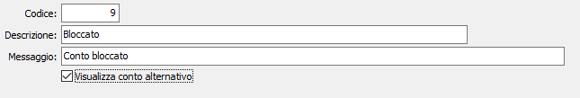

Stato conti
La tabella consente di definire i codici e le descrizione di “stato dei conti”. Tale informazione, inserita nelle anagrafiche dei sottoconti, dei clienti e dei fornitori, può determinare livelli progressivi di “blocco” nell’uso di tali sottoconti, clienti e fornitori.
I codici 0, 7, 8, 9 e 10 sono precaricati all’atto dell’installazione e non modificabili. In particolare, il valore 10 indica che il conto è obsoleto, il valore 9 (bloccato) impedisce l’utilizzo del conto; il valore 8 consente le registrazioni contabili ma non l’emissione di documenti, il valore 7 consente le registrazioni contabili, l’inserimento di ordini ma non l’emissione di documenti di consegna. Lo stato 0 è il normale stato di utilizzo.
L’utente può quindi personalizzare i codici stato da 1 a 6, assegnando una descrizione ed un eventuale messaggio che verrebbe visualizzato in caso d’uso del sottoconto, cliente o fornitore caratterizzato da tale stato.
Spuntando la relativa casella è possibile visualizzare un conto alternativo a quello in uso.
